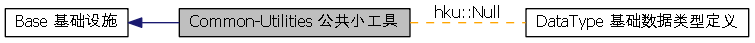

|
Hikyuu
0.1
|
独立的一些小函数、对象工具集合 更多...
|  |
类 | |
| class | hku::Null< T > |
| 提供指定给定类型的Null值 更多... | |
| class | hku::Null< int > |
| 提供int的Null值 更多... | |
| class | hku::Null< unsigned int > |
| 提供unsigned int的Null值 更多... | |
| class | hku::Null< long long > |
| 提供long long（64位整型）的Null值 更多... | |
| class | hku::Null< unsigned long long > |
| 提供unsigned long long（无符号64位整型）的Null值 更多... | |
| class | hku::Null< size_t > |
| 提供size_t的Null值 更多... | |
| class | hku::Null< double > |
| 提供double的Null值 更多... | |
| class | hku::Parameter |
| 供需要命名参数设定的类使用 更多... | |
| #define | HKU_STR(s) (s) |
| Windows平台下将字符串由UTF8转换为GB2312编码， Linux平台下不做任何事 更多... | |
| double | hku::roundEx (double number, int ndigits) |
| 四舍五入，和python中的round行为一样 更多... | |
独立的一些小函数、对象工具集合
附加的公共工具集
| #define HKU_STR | ( | s | ) | (s) |
Windows平台下将字符串由UTF8转换为GB2312编码， Linux平台下不做任何事
| double HKU_API hku::roundEx | ( | double | number, |
| int | ndigits | ||
| ) |
四舍五入，和python中的round行为一样
| number | 待四舍五入的数据 |
| ndigits | 保留小数位数 |
 1.8.3.1
1.8.3.1